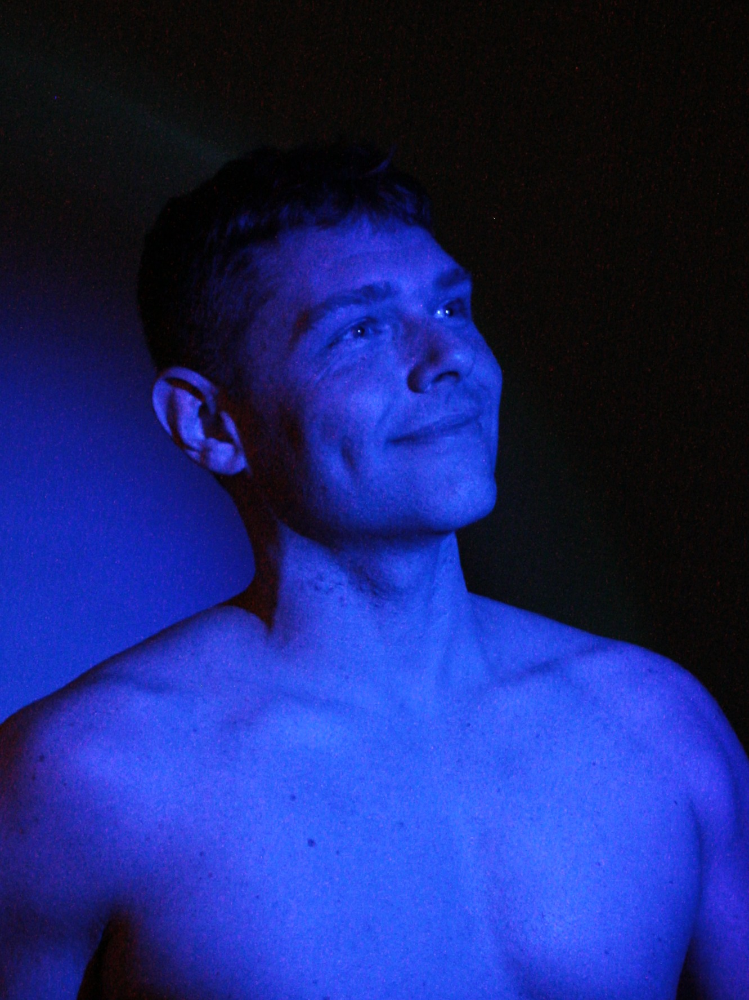

Fleur Bakker Fotografie
(hero.JPG)
Oog voor detail is iets wat mij vaak wordt teruggegeven wanneer ik mijn werk laat zien. Maar mijn fotografie draait om meer dan dat. Ik leg de schoonheid vast die mij raakt in een detail, een blik of een omgeving waarin alles samenkomt. Licht, compositie en gevoel spelen daarin een grote rol. De details zijn onderdeel van het grotere geheel, het hele plaatje. Mijn fotografie laat zien hoe licht en sfeer een moment kunnen versterken. Die schoonheid vang ik niet alleen in de juiste hoek of het mooiste licht, maar ook in een blik, houding of oprechte glimlach. Je hoeft geen fotomodel te zijn om jezelf terug te zien op een mooie en eerlijke manier. Ik kijk door een positieve lens naar de mens en de wereld om mij heen en nodig je uit om hetzelfde te doen, zodat ook jij de schoonheid om je heen en in jezelf kunt zien. Benieuwd naar mijn werk? Neem een kijkje in mijn portfolio.